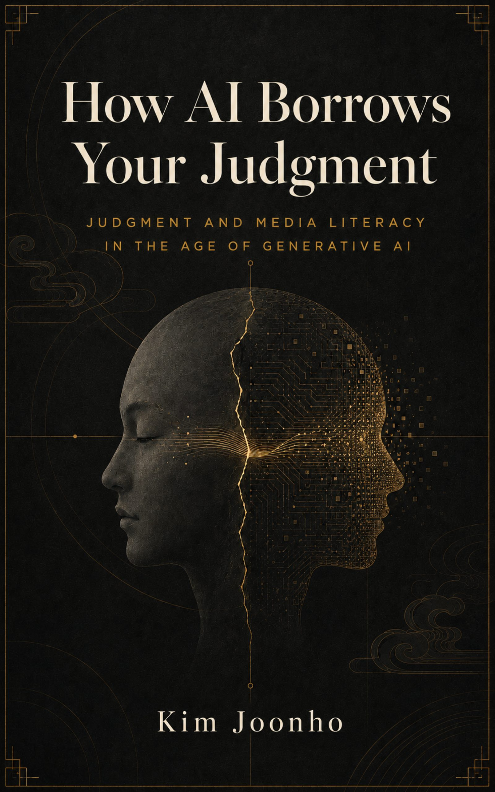
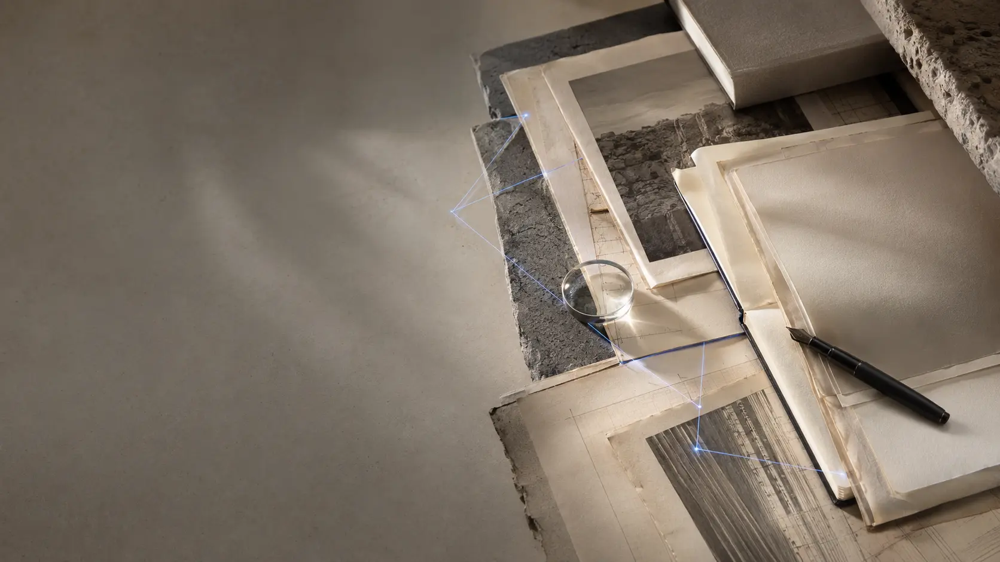
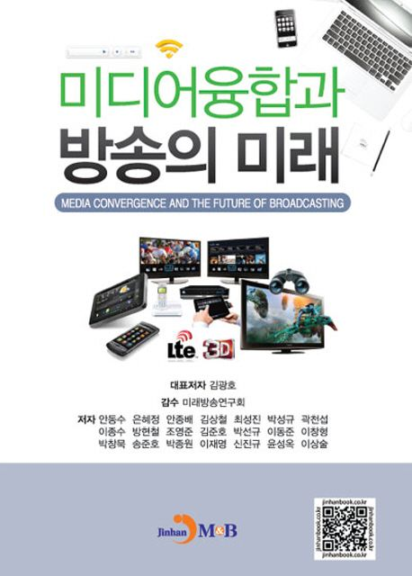
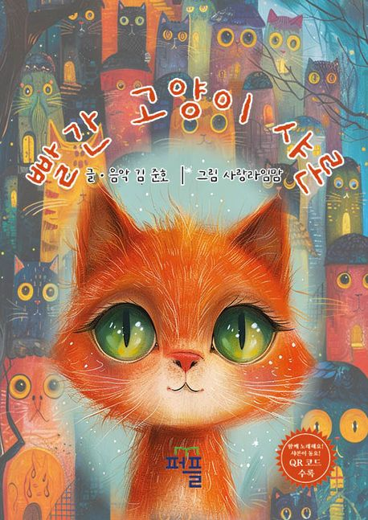
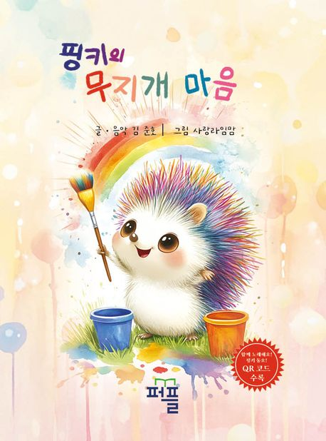
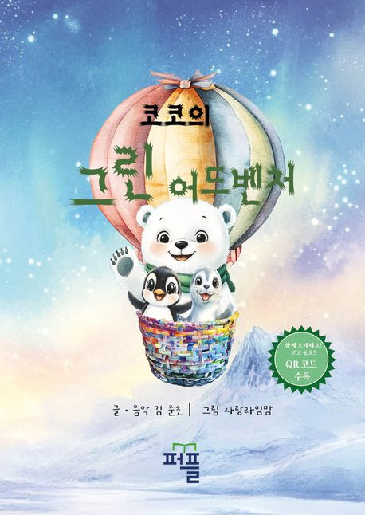
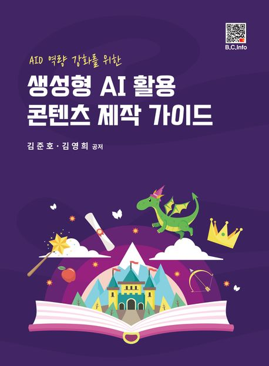

BOOKS · RESEARCH
생각은 기록될 때다음 판단의 근거가 된다.Recorded thoughtbecomes evidence for the next judgment.
미디어, 생성형 AI, 창작과 교육에 관한 저서와 연구입니다.Books and research on media, generative AI, creation, and education.
PUBLICATIONS
출판된 생각의 몸Published bodies of thought
각 책은 서로 다른 독자와 질문을 향합니다.Each book addresses a distinct reader and question.
좌우 화살표로 책을 넘겨보세요.Use the arrows to browse the books.

Media
미디어융합과 방송의 미래
김광호, 김준호 외 공저 · 2012

AI Fairy Tale
빨간 고양이 샤론
김준호, 사랑라임맘 공저 · 2024

AI Fairy Tale
핑키의 무지개 마음
김준호, 사랑라임맘 공저 · 2024

AI Fairy Tale
코코의 그린어드벤처
김준호, 사랑라임맘 공저 · 2024

Generative AI
AID 역량 강화를 위한 생성형 AI 활용 콘텐츠 제작 가이드
김준호, 김영희 공저 · 2025
AI Music Video
생성형 AI를 활용한 뮤직비디오 제작 가이드
김준호 · 2025
AI Agent
나만의 AI Agent 만들기
김준호 · 2025
연구 영역Research fields
- 생성형 AI 창작 연구
- 메타버스와 몰입형 교육
- 스마트 양봉과 센서 시스템
- 실감콘텐츠와 XR 교육
특허Patents
- 말벌소리분석을 이용한 벌집문 개폐 시스템 · 10-2847014
- 벌통 내부 꿀벌 이동량 측정 시스템 · 10-2710001
- 웨어러블 생체 진단 장치 · 10-1849857
- 수중 360 VR 영상 촬영 시스템